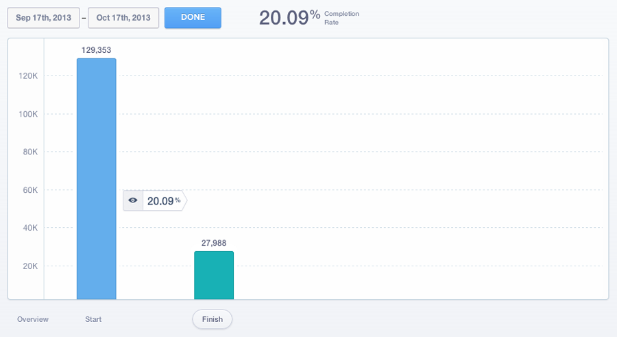

Scenario.js is a tiny Javascript library used to deliver, track, and complete A/B Tests on the client side.
It is useful for determining the impact your software has on users' behavior.
Metrics are recorded automatically with Mixpanel, making your job that much easier.
Continue to read about the usage of Scenario.js
Using Scenario.js is simple. Just include the Mixpanel JS Library and Scenario.js and you are ready to go.
Writing your first test is easy:
var controller = new Scenario('My Test Name');
controller.test('Test A');
controller.test('Test B');
controller.go();This is an example test. Classes will be added to the body element depending on which test was chosen (i.e. "test-a" or "test-b"). When you call the go method, the tests begin.
Completing a Test:
controller.complete(); // Finishes the testCalling the complete method finishes the test and records any remaining metrics in Mixpanel.
Real World Example:
Lets test the difference in conversion rate between these two homepage layouts.
var controller = new Scenario('Homepage Layout');
.test('Homepage V1');
.test('Homepage V2');
.go();
register.on('click', controller.complete);It is that simple to write your tests. How can you implement functionality based on these tests, though?
Refined Logic 1/3
In our prior example, we are testing two homepage layouts. Depending on which test was chosen, a class name will be added to the body element.
<body class="homepage-v1">
<!-- or -->
<body class="homepage-v2">This allows you to add your own custom styles based off of your tests names with only CSS, making things simple to toggle, show/hide, and style.
Refined Logic 2/3
What if we have more complex needs than just changing the style of elements?
controller.test('Homepage V1', function(){
// Homepage V1 Callback
});
controller.test('Homepage V2', function(){
// Homepage V2 Callback
});It is that simple to write your tests. How can you implement functionality based on these tests, though?
Refined Logic 3/3
What if we want one test to appear more often than another? For this, we must add a weight to our tests. Each test by default has a weight of 1.
controller.test('Homepage V1', 2);
controller.test('Homepage V2', 3);Homepage V1 will be shown 2/5 times (or 40%) while Homepage V2 will be shown 3/5 times (or 60%). This is great for testing out new features without releasing them to the entire userbase.
Viewing results in Mixpanel
Data will be viewed in Mixpanel through a Funnel. Funnels are ways to track a series of actions, and what we're interested in is conversion rates between test A and test B.
Viewing results in Mixpanel
Once you are presented with your data, click the "Finish" metric (the second bar) to see the data for people who completed your test.
Last step, you must select the value "test" in the BY field. This will tell Mixpanel to show the data related to test results.
Viewing the percentages on the right gives you insight to the conversion rates between Test A and Test B
Fork us on GitHub!
Scenario.js is available Open Source. Contributions are welcome!